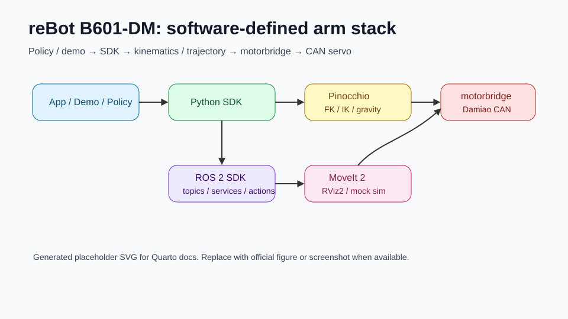

import pandas as pd
pd.read_csv("assets/tables/source_evidence.csv")Phân tích phần cứng cánh tay robot reBot B601-DM của Seeed Studio
reference
seeedstudio
rebot-b601-dm
hardware
specification
kinematics
urdf
joint-limits
controller
analysis
Phân tích thông số phần cứng, mô tả robot, URDF, joint limits, encoder/calibration và các điểm không rõ ràng của reBot B601-DM.
Phân tích phần cứng cánh tay robot reBot B601-DM của Seeed Studio
Important
Tài liệu này phân biệt rõ thông số được công bố, thông số suy ra từ source code, và thông số chưa đủ dữ kiện để kết luận. Với robot open-source giá thấp, sai khác giữa tài liệu marketing, URDF, xacro, YAML runtime và demo policy là chuyện cần được xem như một rủi ro kỹ thuật, không nên xem là lỗi nhỏ.

1. Nguồn dữ liệu và phạm vi kiểm tra
Bốn nguồn chính đã được đối chiếu:
| Nhóm nguồn | Vai trò trong phân tích | Ghi chú |
|---|---|---|
| Seeed official / GitHub | Thông số công bố và hệ sinh thái hỗ trợ | Nêu payload, reach, repeatability, voltage, ecosystem.1 |
| Python SDK | YAML hardware, URDF fixed-end, motor IDs, control gains | Source trực tiếp nhất cho runtime Python.2 |
| ROS 2 SDK | URDF/xacro, SRDF, MoveIt2, RViz2, hardware config | Có cả URDF fixed-end và URDF có gripper.3 |
| Demo repo | Visual grasping và LeRobot follower | Cho thấy cách dùng SDK trong ứng dụng thực tế.4 |
Theo Modern Robotics, robot arm nên được mô hình hóa từ configuration space, task space, workspace, rigid-body transforms \(T \in SE(3)\), Jacobian, IK và trajectory generation. Vì vậy tài liệu này không chỉ chép thông số, mà xem các thông số đó có đủ để phục vụ FK/IK, planning, control và benchmark hay không.5
2. Thông số kỹ thuật công bố
| Thông số | reBot Arm B601-DM | Mức tin cậy | Ghi chú kỹ thuật |
|---|---|---|---|
| Bậc tự do | 6 DOF + 1 gripper | Cao | Khớp với URDF arm 6R và gripper trong ROS2 full URDF. |
| Payload | \(1.5~\mathrm{kg}\) | Trung bình | Là thông số công bố; cần benchmark thực tế theo vị trí trong workspace. |
| Recommended workspace | khoảng \(70\%\) tầm với | Trung bình | Nên dùng làm constraint thực nghiệm khi test payload. |
| Max reach | \(0.767~\mathrm{m}\) \(767~\mathrm{mm}\) |
Trung bình | Một số bài/news cũ nêu \(650~\mathrm{mm}\); official GitHub hiện nêu \(767~\mathrm{mm}\). |
| Khối lượng | khoảng \(4.5~\mathrm{kg}\) | Trung bình | Không thấy trong YAML/URDF một cách có thể kiểm chứng đầy đủ. |
| Repeatability | \(<0.2~\mathrm{mm}\) | Cần benchmark | Không thay thế cho accuracy tuyệt đối. Cần đo với AprilTag/đồng hồ so. |
| Nguồn | DC \(24~\mathrm{V}\) | Cao | Quick start cũng nêu nguồn \(24~\mathrm{V}~15~\mathrm{A}\). |
| Nền tảng hỗ trợ | ROS1, ROS2, LeRobot, Pinocchio, Isaac Sim, Python SDK | Cao | Hệ sinh thái source xác nhận có Python SDK, ROS2, LeRobot, visual grasping. |
Warning
Repeatability không đồng nghĩa accuracy. Repeatability \(<0.2~\mathrm{mm}\) nghĩa là khả năng quay lại cùng điểm lặp lại; accuracy tuyệt đối so với frame thế giới vẫn phụ thuộc calibration base, TCP, URDF, encoder zero, backlash, payload và deformation.
3. Servo, giao tiếp, nguồn và board phụ trợ
Từ rebotarm_dm.yaml, B601-DM dùng Damiao motor cho cả arm và gripper. Ba joint đầu dùng 4340P, các joint cổ tay và gripper dùng 4310.6
| joint | motor_id_hex | feedback_id_hex | vendor | model | mit_kp | mit_kd | pos_vel_vlim_rad_s | pos_vel_pos_kp | pos_vel_pos_ki | pos_vel_vel_kp | pos_vel_vel_ki |
|---|---|---|---|---|---|---|---|---|---|---|---|
| joint1 | 0x1 | 0x11 | damiao | 4340P | 120.0 | 8.0 | 5.0 | 150.0 | 0.5 | 0.0125 | 0.004 |
| joint2 | 0x2 | 0x12 | damiao | 4340P | 120.0 | 8.0 | 5.0 | 150.0 | 0.5 | 0.0125 | 0.004 |
| joint3 | 0x3 | 0x13 | damiao | 4340P | 120.0 | 8.0 | 5.0 | 150.0 | 0.5 | 0.0125 | 0.004 |
| joint4 | 0x4 | 0x14 | damiao | 4310 | 18.0 | 2.0 | 3.0 | 50.0 | 1.0 | 0.0008 | 0.002 |
| joint5 | 0x5 | 0x15 | damiao | 4310 | 18.0 | 2.0 | 3.0 | 50.0 | 1.0 | 0.0008 | 0.002 |
| joint6 | 0x6 | 0x16 | damiao | 4310 | 18.0 | 2.0 | 3.0 | 50.0 | 1.0 | 0.0008 | 0.002 |
| gripper | 0x7 | 0x17 | damiao | 4310 | 8.0 | 1.0 | 3.0 | 50.0 | 1.0 | 0.0008 | 0.002 |
Về giao tiếp, YAML khai báo channel: /dev/ttyACM0 và rate: 500; trong Python SDK, nếu channel có dạng /dev/tty*, controller được tạo bằng Controller.from_dm_serial(channel, 921600), tức runtime mặc định đi qua USB serial bridge sang CAN ở baud serial \(921600\).7
Host PC / Jetson
↓ USB serial
USB2CAN / Damiao serial bridge
↓ CAN bus
Damiao actuators: joint1..joint6 + gripperOfficial quick start liệt kê phần cứng gồm robot arm, USB-CAN adapter board, signal-power separation board, USB-C cable và nguồn \(24~\mathrm{V}~15~\mathrm{A}\).8
3.1. MCU và I/O
Trong các source zip được kiểm tra, không có bảng MCU chi tiết cho từng board phụ trợ. Có thể xác nhận các thành phần chức năng sau:
| Thành phần | Có trong source/tài liệu | Mức rõ ràng | Nhận xét |
|---|---|---|---|
| Damiao actuator embedded controller | Có, thông qua motorbridge và vendor damiao |
Trung bình | Source gọi API motorbridge, không công bố MCU nội bộ actuator. |
| USB2CAN / serial bridge | Có | Trung bình | Python SDK dùng from_dm_serial(..., 921600). |
| Signal-power separation board | Có trong quick start | Thấp | Không thấy schema điện/MCU chi tiết trong SDK. |
| I/O mở rộng | Chưa rõ | Thấp | Không thấy API I/O general-purpose trong Python SDK/ROS2 SDK. |
Kết luận: phần I/O và MCU board phụ trợ nên được đánh dấu là chưa đủ dữ kiện nếu đưa vào tài liệu kỹ thuật chuẩn.
4. Mô tả động học từ URDF
4.1. URDF joint-chain fixed-end dùng trong Python SDK
Python SDK dùng URDF reBot-DevArm_fixend.urdf với end_effector_frame: end_link.9 Bảng dưới đây trích xuất trực tiếp từ URDF fixed-end của Python SDK.
| joint | type | parent | child | origin_xyz_m | origin_xyz_mm | origin_rpy_rad | axis_xyz | lower_rad | upper_rad | effort | velocity |
|---|---|---|---|---|---|---|---|---|---|---|---|
| joint1 | revolute | base_link | link1 | -8.416E-05 0 0.08465 | -0.084 0.000 84.650 | 0 0 0 | 0 0 1 | -2.8 | 2.8 | 27 | 50 |
| joint2 | revolute | link1 | link2 | 0.020084 0.031625 0.05555 | 20.084 31.625 55.550 | -1.5708 0 0 | 0 0 -1 | -3.14 | 0 | 27 | 50 |
| joint3 | revolute | link2 | link3 | -0.264 0 0 | -264.000 0.000 0.000 | 0 0 0 | 0 0 1 | -3.14 | 0 | 27 | 50 |
| joint4 | revolute | link3 | link4 | 0.2426 -0.054 -0.001625 | 242.600 -54.000 -1.625 | 0 0 0 | 0 0 1 | -1.87 | 1.57 | 7 | 200 |
| joint5 | revolute | link4 | link5 | 0.078308 -0.0375 -0.03 | 78.308 -37.500 -30.000 | -1.5708 0 0 | 0 0 1 | -1.57 | 1.57 | 7 | 200 |
| joint6 | revolute | link5 | link6 | 0.028008 0 0.04 | 28.008 0.000 40.000 | 0 1.5708 0 | 0 0 1 | -3.14 | 3.14 | 7 | 200 |
4.2. Bảng MDH: trạng thái hiện tại
Warning
Không tìm thấy bảng D-H/MD-H chính thức trong source được upload. URDF mô tả cây link-joint bằng origin xyz/rpy, axis, parent, child; URDF không phải bảng MDH. Việc ép URDF thành MDH cần chọn lại frame theo quy ước Craig/Modified-DH và kiểm chứng FK bằng số.
Dạng Modified D-H thường viết:
\[ {}^{i-1}T_i(q_i)=R_x(\alpha_{i-1})T_x(a_{i-1})R_z(\theta_i)T_z(d_i) \tag{1}\]
Trong khi URDF joint transform có dạng:
\[ {}^{p}T_c(q_i)=T_{\mathrm{origin}}\,\exp(\hat{S}_i q_i) \tag{2}\]
Hai mô hình này có thể tương đương về FK, nhưng frame trung gian không giống nhau. Vì vậy bảng MDH tạm thời nên ghi như sau:
| Joint | Trạng thái MDH | Lý do chưa chốt |
|---|---|---|
| joint1..joint6 | Chưa xác nhận | Source có URDF, không có MDH chính thức. |
| gripper_joint1/2 | Không áp dụng như 6R arm | Đây là prismatic gripper joint trong ROS2 full URDF. |
Quy trình đúng để tạo bảng MDH kiểm chứng:
- Chọn chuẩn
base_linkvàtool0/gripper_tcp. - Đặt frame MDH theo quy tắc nhất quán.
- Tính \(T_{0,6}^{MDH}(q)\).
- Tính \(T_{base,tool}^{URDF}(q)\) từ Pinocchio/KDL.
- So sánh trên nhiều mẫu \(q\):
\[ \lVert p_{MDH} - p_{URDF} \rVert_2 < \epsilon_p, \quad \lVert \log(R_{MDH}^T R_{URDF}) \rVert_2 < \epsilon_R \tag{3}\]
Chỉ khi vượt qua bước này mới nên công bố bảng MDH.
5. Joint limits và sai khác giữa các tầng
Bảng dưới đây đối chiếu Python URDF, ROS2 full URDF, MoveIt planner limits và LeRobot soft limits.
| joint | python_urdf_fixedend | ros2_full_gripper_urdf | moveit_planner_limit | lerobot_dm_soft_limit | note |
|---|---|---|---|---|---|
| joint1 | [-2.800,2.800] rad / [-160.4,160.4] deg | [-2.800,2.800] rad / [-160.4,160.4] deg | {‘has_velocity_limits’: True, ‘max_velocity’: 1.0, ‘has_acceleration_limits’: True, ‘max_acceleration’: 1.0} | shoulder_pan [-145,145] deg | URDF limit là model kinematic/visual; MoveIt joint_limits.yaml là planner-level override; LeRobot là soft limit theo policy joint naming. |
| joint2 | [-3.140,0.000] rad / [-179.9,0.0] deg | [-3.140,0.000] rad / [-179.9,0.0] deg | {‘has_velocity_limits’: True, ‘max_velocity’: 1.0, ‘has_acceleration_limits’: True, ‘max_acceleration’: 1.0} | shoulder_lift [-170,0] deg | URDF limit là model kinematic/visual; MoveIt joint_limits.yaml là planner-level override; LeRobot là soft limit theo policy joint naming. |
| joint3 | [-3.140,0.000] rad / [-179.9,0.0] deg | [-3.140,0.000] rad / [-179.9,0.0] deg | {‘has_velocity_limits’: True, ‘max_velocity’: 1.0, ‘has_acceleration_limits’: True, ‘max_acceleration’: 1.0} | elbow_flex [-200,0] deg | URDF limit là model kinematic/visual; MoveIt joint_limits.yaml là planner-level override; LeRobot là soft limit theo policy joint naming. |
| joint4 | [-1.870,1.570] rad / [-107.1,90.0] deg | [-1.870,1.570] rad / [-107.1,90.0] deg | {‘has_velocity_limits’: True, ‘max_velocity’: 1.0, ‘has_acceleration_limits’: True, ‘max_acceleration’: 1.0} | wrist_flex [-80,90] deg | URDF limit là model kinematic/visual; MoveIt joint_limits.yaml là planner-level override; LeRobot là soft limit theo policy joint naming. |
| joint5 | [-1.570,1.570] rad / [-90.0,90.0] deg | [-1.570,1.570] rad / [-90.0,90.0] deg | {‘has_velocity_limits’: True, ‘max_velocity’: 1.0, ‘has_acceleration_limits’: True, ‘max_acceleration’: 1.0} | wrist_yaw [-90,90] deg | URDF limit là model kinematic/visual; MoveIt joint_limits.yaml là planner-level override; LeRobot là soft limit theo policy joint naming. |
| joint6 | [-3.140,3.140] rad / [-179.9,179.9] deg | [-3.140,3.140] rad / [-179.9,179.9] deg | {‘has_velocity_limits’: True, ‘max_velocity’: 1.0, ‘has_acceleration_limits’: True, ‘max_acceleration’: 1.0} | wrist_roll [-90,90] deg | URDF limit là model kinematic/visual; MoveIt joint_limits.yaml là planner-level override; LeRobot là soft limit theo policy joint naming. |
| gripper_joint1 | [0.000,0.071] rad / [0.0,4.1] deg | {‘has_velocity_limits’: True, ‘max_velocity’: 0.2, ‘has_acceleration_limits’: True, ‘max_acceleration’: 0.5} | URDF limit là model kinematic/visual; MoveIt joint_limits.yaml là planner-level override; LeRobot là soft limit theo policy joint naming. | ||
| gripper_joint2 | [0.000,0.071] rad / [0.0,4.1] deg | {‘has_velocity_limits’: True, ‘max_velocity’: 0.2, ‘has_acceleration_limits’: True, ‘max_acceleration’: 0.5} | URDF limit là model kinematic/visual; MoveIt joint_limits.yaml là planner-level override; LeRobot là soft limit theo policy joint naming. | ||
| gripper | {} | gripper [-270,0] deg | URDF limit là model kinematic/visual; MoveIt joint_limits.yaml là planner-level override; LeRobot là soft limit theo policy joint naming. |
Các điểm đáng chú ý:
- Arm joint limits trong Python fixed-end URDF và ROS2 fixed-end URDF trùng nhau.
- ROS2 full gripper URDF thêm
gripper_joint1vàgripper_joint2dạng prismatic với miền \([0,0.0715]~\mathrm{m}\). - MoveIt
joint_limits.yamlkhông nhất thiết là giới hạn vật lý; nó là giới hạn planner/time parameterization. - LeRobot dùng joint naming theo policy như
shoulder_pan,shoulder_lift,elbow_flex, khác tên URDFjoint1..joint6. - LeRobot có
joint_directionsriêng, nghĩa là action policy không trùng trực tiếp chiều dương URDF/hardware.
Important
Khi benchmark FK/IK hoặc policy replay, phải lưu bảng mapping joint gồm: URDF joint name, hardware joint name, LeRobot feature name, direction sign, zero offset, unit rad/deg, soft limit, hard limit. Thiếu bảng này sẽ làm sai kết quả dù IK solver đúng.
6. Encoder và calibration
Các source được kiểm tra cho thấy cơ chế calibration chủ yếu là zero position ở tầng motor/hardware:
- Python SDK có API
set_zerotrongRebotArm. - ROS2 SDK expose
/rebotarm/set_zeroservice. - LeRobot follower có routine calibration yêu cầu đưa robot về zero pose rồi gọi
set_zero_positiontừng motor. - Seeed quick start ghi rằng nếu mua pre-assembled kit thì có thể bỏ qua bước ghi motor ID/calibrate zero.10
Tuy nhiên source không cung cấp bảng encoder absolute count, ratio, offset hay công thức chuyển encoder raw \(\rightarrow q_i\) độc lập. Phần này đang bị che bởi motorbridge và firmware actuator. Do đó không nên ghi rằng ta biết encoder count/radian nếu chưa đọc motorbridge hoặc datasheet Damiao.
7. Cảnh báo kỹ thuật khi dùng thông số này cho MyArm Master 750
Bài học quan trọng khi đối chiếu reBot với MyArm M750:
- Thông số marketing không đủ cho control layer. Cần URDF, joint limits, encoder zero, TCP, frame convention và control mode.
- URDF không đồng nghĩa DH/MDH. Muốn so sánh FK giữa firmware và software phải dùng cùng frame và cùng TCP.
- Joint limits có nhiều lớp. Hardware hard-limit, URDF limit, MoveIt planner limit và policy soft-limit có thể khác nhau.
- Encoder calibration cần trace được. Nếu vendor không cung cấp raw encoder mapping, phải benchmark zero repeatability và offset thực nghiệm.
- TCP frame phải thống nhất. Python SDK dùng
end_link; MoveIt2 thêmgripper_tcp. Nếu MyArm cũng cótool0,flange,camera_link, cần quy định frame canonical.
8. Checklist dùng lại cho MyArm M750
9. Source evidence
Footnotes
Seeed-Projects,
reBot-DevArm, section Hardware Specifications, lines checked from official GitHub on 22/06/2026: payload, recommended workspace, max reach, weight, repeatability, DOF, ecosystem and supply voltage.↩︎Uploaded source:
reBotArm_control_py/config/rebotarm_dm.yaml, lines 13–129.↩︎Uploaded source:
reBotArmController_ROS2/src/rebotarm_bringup/config/rebotarm_hardware.yaml, lines 7–59.↩︎Seeed Studio Wiki,
reBot Arm B601-DM Visual Grasping Demo, project features and specifications, checked 22/06/2026.↩︎Kevin M. Lynch and Frank C. Park, Modern Robotics: Mechanics, Planning, and Control, chapters on configuration space, rigid-body motions, FK, IK, trajectory generation and control.↩︎
Uploaded source:
reBotArm_control_py/config/rebotarm_dm.yaml, lines 13–129.↩︎Uploaded source:
reBotArm_control_py/reBotArm_control_py/actuator/rebotarm.py, lines 484–508.↩︎Seeed Studio Wiki,
Getting Started with reBot Arm B601-DM, preparation list, checked 22/06/2026.↩︎Uploaded source:
reBotArm_control_py/config/rebotarm_dm.yaml, lines 13–129.↩︎Seeed Studio Wiki,
Getting Started with reBot Arm B601-DM, quick start note for pre-assembled kit and motor ID / zero-position steps, checked 22/06/2026.↩︎